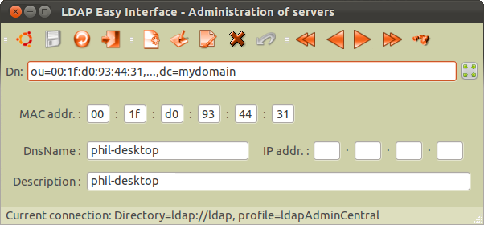

Il s'agit d'une suite logicielle ayant pour
objectif de mettre à disposition de l'administrateur système d'un
réseau Intranet des outils conviviaux permettant de centraliser le
paramétrage de ses systèmes serveurs au sein d'un annuaire LDAP
(Lightweight Directory
Access Protocol).
Ainsi, l'installation (ou la réinstallation) logicielle d'un des matériels
"serveur" se limitera-t-elle à appliquer les paquets logiciels
nécessaires au fonctionnement des services qu'il héberge et le paramétrage de ses
services hébergés pourra-t-il être effectif dès le premier démarrage du système
d'exploitation, cela à partir
de l'adresse MAC de sa (première) carte réseau identifiée au sein de l'annuaire LDAP.
Toute modification ultérieure du paramétrage au sein de ce même
annuaire pourra ensuite être répercutée automatiquement sur chaque
plate-forme matérielle concernée (via, par exemple, le service "cron").
Deux groupes de logiciels composent cette suite :
- les interfaces graphiques qui
permettent, de façon conviviale, de mettre en oeuvre ou modifier le
paramétrage des serveurs et services gérés au sein de la base LDAP.
- les pilotes de paramétrage qui se chargent de récupérer les informations
au sein de l'annuaire et de les transformer en fichiers standards de
configuration système, notamment pour les services dont la
configuration n'est pas nativement interfacée avec le protocole LDAP.
Nota: Une
gestion de profils administrateurs permet de dédier par
parties la gestion LDAP des paramétrages systèmes auprès de différents pôles de compétences :
administrateurs réseau, administrateurs systèmes, responsables de la
hotline utilisateurs, ...
L'interface graphique
présentée ci-dessous en exemple est celle qui permettra de définir et gérer l'entité
"serveur" au sein de l'annuaire d'entreprise.
Elle ne défini à proprement parler aucun service réseau (tout au plus,
le nom de domaine du serveur) mais sert essentiellement à définir dans l'annuaire LDAP le
"noeud" serveur auquel seront par la suite attachées diverses autres
définitions, contrôlées via d'autres interfaces spécifiques (par exemple : gestion des définitions "
samba", "
rsyncd", "
nfsd", ...).
Cette entité "serveur" constitue donc la racine de définition des
services qui y seront rattachés.
